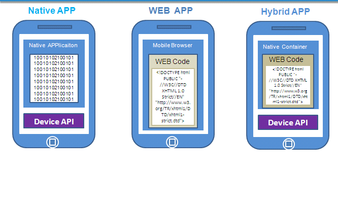
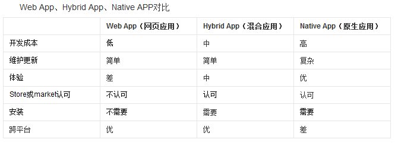
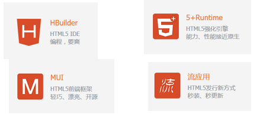
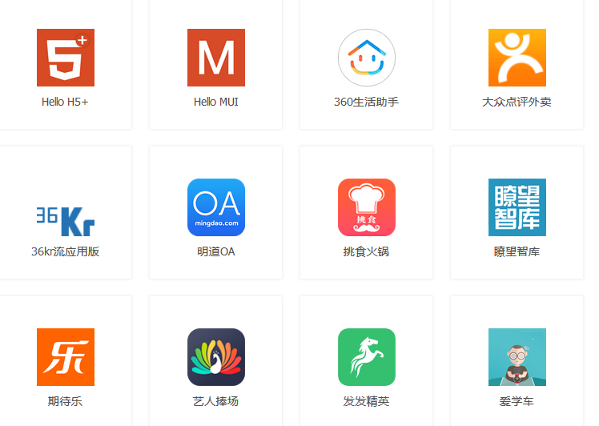

ionic服务器搭建
一、混合app开发课程介绍
- 1.1 什么是混合app
application（应用），Hybrid app（开发app的一种方式。）
用web前端的知识开发出来app的方式就叫做混合app开发。
原生的app。Native app - 1.2 为什么要学习这部分课程那？
“钱”多，“钱途光明”
有移动开发经验的开发人员比普通的web前端开发人员工资要高出一大截。 - 1.3 混合开发课程的目标是什么？
我们用学过的前端知识可以开发出一个可以安装在手机里面的app。
顺便复习前边的基础。 - 1.4 混合app开发部分课程要讲什么东西？
Ionic、react Native - 1.5 仿京东商城项目演示
下面的截图就是用混合开发中Ionic框架方式开发的：


二、混合开发简介
2.1现在app开发方类型有几种？
- WebApp:就是在浏览器中运行的web应用
- 原生的app中webview（就是外壳，web页面）
- NativeApp:用java和Object-C/swift等原生语言开发的应用
- HybridApp:就是外面是原生的壳，里面是webapp应用，兼具2者的优势
2.2三种开发类型的原理和对比

2.3企业如何选择用那种方式开发产品？
三 ，移动app开发框架介绍（前端）
3.1移动端开发有哪些框架那？
Ionic
Html5+（DCLOUD）
APICloud
AppCan
Framework7
Jquery Mobile
React Native 不属于hybrid app的范畴。
…….
3.2Html5+
3.2.1首先要认识Html5+联盟是什么？
HTML5中国产业联盟，简称“HTML5+联盟”，是为了更好的推进HTML5的商用、更好的为HTML5开发者服务而由产 业链主流厂商共同组成的一个联盟。
联盟致力于整合产业链资源，建立围绕HTML5开发者的生态系统，通过产业链共同为HTMLl5开发者服务。
W3C中国是联盟的指导单位。
CSDN 和 DCloud 是联盟的秘书处单位。
3.2.2Dcloud官网
官网：http://www.dcloud.io/
Emmet语法:http://docs.emmet.io/cheat-sheet/
这个公司下面有四个主要的产品：

HBuilder：是一款web开发工具。它能大幅提升开发效率，对程序员也设计了更人文关怀的UI，它包括最全面的语法库和浏览器兼容性数据。到现在 已经有两年的时间了，到现在大概有几十万的开发者在使用。
5+Runtime：是一个H5的增强引擎。这是一个可以去调用H5的能力和原生操作系统的产品。
MUI框架：是高性能的前端框架，可用开发高性能App，也是目前最接近原生App效果的框架，可以有效解决HTML5原生开发中遇到的部分问题，同 时体积也小。
应用流：会让用户感觉一点开就可以用，这也是颠覆现有的应用方式的主要因素，给最终用户去使用应用有更好的体验。
3.2.3Html5+的优点
提供了一个自定制的IDE工具，支持非常好，轻量级，甚至不需要安装直接解压缩就可以使用
开发出来的app的性能很好，用户体验很高
丰富的api支持，号称有40万+
3.2.4Html5+的缺点
打包比较麻烦
从新学习样式
3.2.5现在那些公司在用Html5+?
http://www.dcloud.io/case/#group-1

3.3Ionic介绍
3.3.1官网地址
Ionic官网 http://ionicframework.com/
Ionic中文网 http://www.ionic.wang/
3.3.2首先要认识Ionic框架？
Ionic: 把Angularjs集成过来，并且写了一套UI组件。（Angularjs+UI组件）
IONIC是目前最有潜力的一款 HTML5 手机应用开发框架。通过 SASS 构建应用程序，它提供了很多 UI 组件来帮助开发者开发强大的应用。 它使用 JavaScript MVVM 框架和 AngularJS 来增强应用。提供数据的双向绑定，使用它成为 Web和移动开发者的共同选择。Ionic是一个专注于用WEB开发技术，基于HTML5创建类似于手机平台原生应用的一个开发框架。Ionic框架的目的是从 web的角度开发手机应用，基于PhoneGap的编译平台，可以实现编译成各个平台的应用程序。
3.3.3Ionic框架构成
- CSS框架 - 提供原生 App 质感的 CSS 样式模拟。 ionic 这部分的实现使用了 ionicons 图标样式库。
- JavaScript框架 - 提供移动 Web 应用开发框架。ionic 基于 AngularJS 基础框架开发，遵循 AngularJS 的框架约束；此外 ionic 使用 AngularJS UI Router 实现前端路由。
- 命令行/CLI - 命令行工具集用来简化应用的开发、构造和仿真运行。ionic 命令行工具使用了 Cordova，依赖于平台 SDK（Android & iOS）实现将移动 Web 项目打包成原生 App。
3.3.4Ionic特点
基于Angular语法，简单易学。
是一个轻量级框架。性能优越，运行速度快。
完美的融合下一代移动框架，支持 Angularjs 的特性， MVC ，代码易维护。
提供了漂亮的设计，通过 SASS 构建应用程序，它提供了很多 UI 组件来帮助开发者开发强大的应用。
专注原生，让你看不出混合应用和原生的区别
提供了强大的命令行工具。3.3.5Ionic开发注意点有哪些？
- 由于 ionic 使用了 HTML5 和 CSS3 的一些新规范，所以要求 iOS7+ / Android4.1+。
- 在低于这些版本的手机上使用 ionic 开发的应用，有时会发生莫名其妙的问题。
- Ionic2.0（angular2.0） ionic1.x（angular1.x）